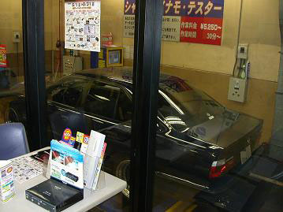
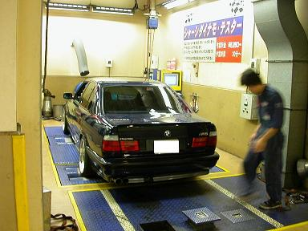
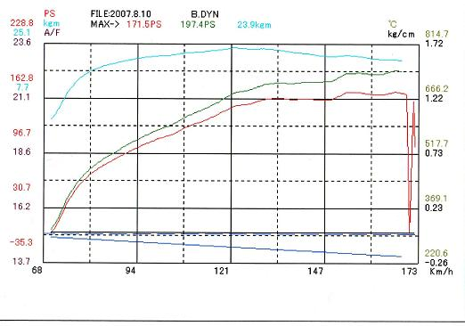
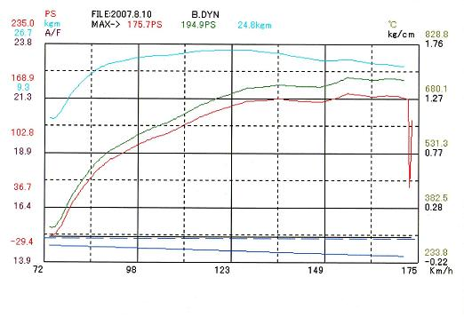

 まず、「外車」を受け入れてくれる所を探すのが大変でした＾＾； 今回測定をお願いしたのは、スーパーオートバックス、サンシャインKOBE スーパーオートバックスでも測定OKなところNGなところ様々です。。 |
 シャシダイに載せる前に、壊れても文句言いません的な誓約書を書かされる。 そこに「許容回転数」を記載しなければいけないので「回るだけ」と書いた＾＾ ローラーに載せてロープで固定し、３速固定で回るだけ踏みます。 この一連の作業は全て店員さんにお任せ。 ２回測定してくれます。 |
 そして、こちらが１回目のデータ。 水色の線がトルク、赤の線が測定馬力、それを補正したのが緑の線の修正馬力です。 ドラムの滑りやミッションのロスを差し引いた値が修正馬力だそうです。 結果は見ての通り、197ps/23.9kg-m |
 そして、こちらが２回目のデータ。 194ps/24.8kg-m この時、走行距離は約199000キロ エンジンOH無しな車両としてはイイ感じなのかなぁ？ 他に比較できるデータがないので分からない＾＾； そして、最初の目的であるACSのロム、これの効果も結局わからない（笑 馬力はイイとしてもトルクはもう少しなんとかならないものか。。。 ATがイッてしまった今、同じ状況でもう１度測定はできないが、 機会があればノーマルロムで測定したいと思う。（2008/4/12にATがイッちゃいました。。） |